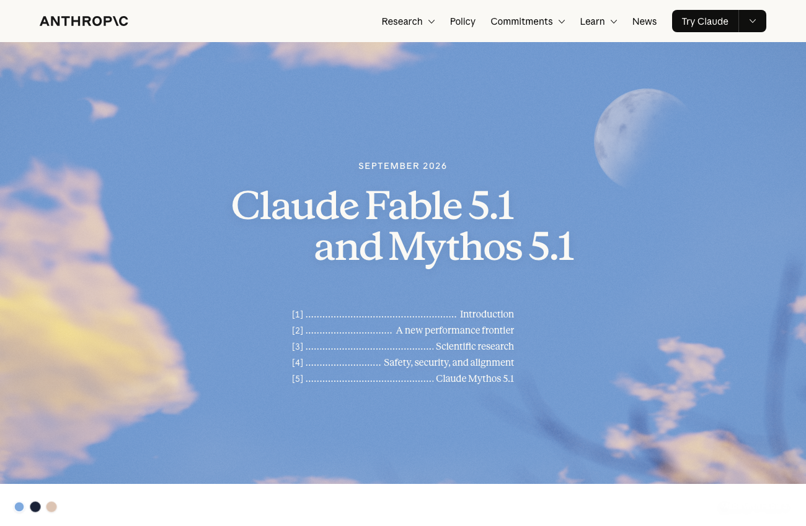
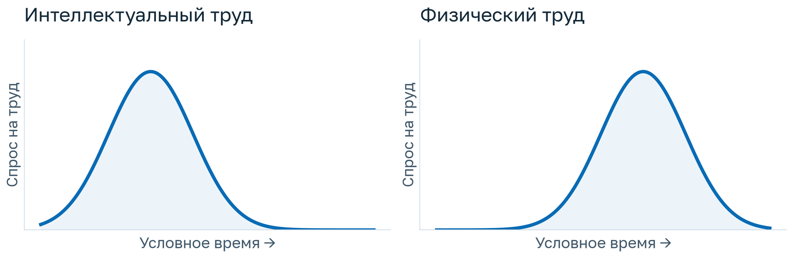
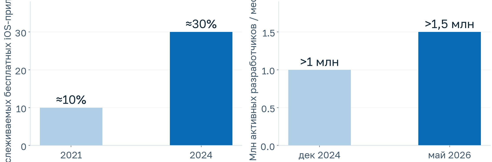
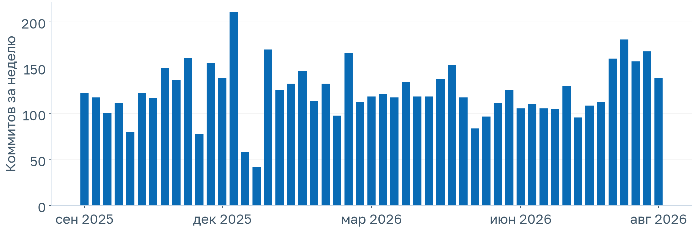

Flutter
в эпоху агентов
Егор Федяев · НИУ ВШЭ · 2026/27
Начало в мобильной разработке
Разрабатываю с 2021 года
Руководство мобильной разработкой
Кросс-функциональная служба
Доход, выплаты и финансовые инструменты партнёра.
Профиль прямого партнёра, чеки и налоги.
Агентские системы, продуктовые базы знаний и транзакционный бизнес.
iOS · Android · Web · Desktop
Рост экосистемы и production-кейсы
Скорость разработки ↔ платформенные возможности
30.11.2022
Вопрос → объяснение → ручное применение
24.11.2024
Правки нескольких файлов в редакторе
24.02.2025
Инструменты, репозиторий и запуск тестов
24.11.2025
Веха усиления моделей и личного перехода
11.02.2026
Публичный кейс разработки через агентов
Сентябрь 2026
Долгие задачи, инструменты и новая работа с контекстом

Браузер, компьютер, код и проверка интерфейса.
Поиск по прежним окнам и заметки в Codex.
Меньше ручной передачи контекста между этапами.
Создать структуру, первую функцию и проверки.
Сохранить контракты, архитектуру и уже работающее поведение.
разработчиков
их pull request’ов
агентского кода в этих PR
Внутренняя beta: 0 строк вручную, около 1500 PR за пять месяцев.
Публичные исследования harness для длительной разработки.
Agentic Hot Reload и инструменты для агентской работы.
Сама выбирает цели
и выполняет работу.
Намерение, вкус
и ответственность.

Возможность меньше работать и шире распределять выгоды.
Выгоды концентрируются у владельцев систем и капитала.
Сама выбирает цели
и выполняет работу.
Намерение, вкус
и ответственность.
Какую проблему и для кого решаем.
Как отличаем хорошее решение от формально работающего.
Как убеждаемся, что системе можно доверять.


Яндекс · Ozon · WB
Google · Delivery Hero · BMW
Меньше независимых реализаций одного сценария.
Меньше архитектурных соглашений для человека и агента.
Часть логики и тестов можно переиспользовать.
Переиспользуем код и часть проверок.
Согласуем две реализации поведения.
Неполное требование, неверный контракт, лишняя сложность.
Проверять только удобный сценарий или повторять код.
Что увидит пользователь и что сохранится в данных.
Получить прототип и понять, есть ли идея.
Удерживать требования, архитектуру, тесты и качество.
Любопытство, насмотренность, проверка новых инструментов.
Выяснять потребность и договариваться о критериях.
Ответственность, креативность и способность исправлять ошибки.
Требования, код, правила и история.
Файлы, команды, приложение и данные.
Тесты, наблюдения и критерии остановки.
Спецификация, план, задачи и реализация.
Изменения через согласованные спецификации.
Роли и рабочие процессы для продуктовой разработки.
Где лежат требования и что является источником истины.
Как обнаружить ошибку независимо от автора кода.
Когда задача готова, заблокирована или требует решения человека.
Типы, ООП, асинхронность и модель исполнения.
Виджеты, состояние, навигация и данные.
Контракты, зависимости, тесты и качество.
Работающее приложение и объяснение решений.
То же приложение плюс разбор организации работы.
Два подхода к одной Flutter-задаче.
Почему агент ошибся и какая проверка помогла.
SDD, работа с контекстом или роли в harness.
ДЗ · две работы по 15%
Один доклад
Итоговый проект
Активность
Как устроены Dart, Flutter и архитектура приложения.
Довожу продуктовый сценарий до работающего результата.
Умею оценить агентский подход и объяснить свои решения.
Используйте новые инструменты и подходы прямо сейчас.
Быстро пересматривайте убеждения и адаптируйтесь к изменениям.
Проверяйте идеи на практике и находите свой способ работы.